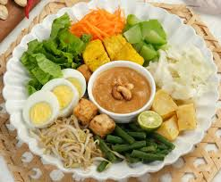

Gado-gado

Ingredients
- Cabbage
- Bean sprouts
- Green beans
- Carrots
- Spinach
- Water spinach (kangkung)
- Cucumber (sliced thinly)
- Firm tofu, cubed and fried until golden
- Tempeh, sliced and fried until crispy
- Hard-boiled eggs, halved or quartered
- Roasted peanuts, finely ground or peanut butter
- Garlic, minced
- Shallots, minced
- Tamarind paste or tamarind water
- Palm sugar or brown sugar
- Sweet soy sauce (kecap manis)
- Salt
- Water, to adjust consistency
- Shrimp crackers (krupuk)
- Fried shallots or onions for garnish
- Lime wedges for serving
- Chili flakes or sambal for extra heat
Steps
-
Prepare Ingredients: Gather and prepare all the
ingredients needed for gado-gado. This includes vegetables, protein, and
ingredients for the peanut sauce.
-
Blanch Vegetables: Bring a pot of water to a boil and
blanch the mixed vegetables until they are tender but still crisp. Then,
drain and set aside.
-
Cook Protein: Cook the protein components such as tofu,
tempeh, and hard-boiled eggs according to your preference. Tofu and
tempeh are typically fried until golden and crispy.
-
Make Peanut Sauce (Kuah Kacang): Prepare the peanut
sauce by blending roasted peanuts (or peanut butter) with minced garlic,
shallots, tamarind paste, palm sugar, sweet soy sauce, salt, and water
to achieve the desired consistency.
-
Assemble Gado-Gado: Arrange the blanched vegetables,
cooked protein, and hard-boiled eggs on a serving platter or individual
plates.
-
Serve: Drizzle the peanut sauce generously over the
assembled gado-gado. Optionally, garnish with fried shallots or onions.
Serve immediately.